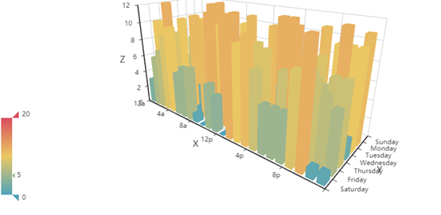

pyecharts是基于百度开源图表组件echarts的python封装。支持所有常用的图表组件，和matlibplot系的图表库不同的是：pyecharts支持动态交互展示，这一点在查看复杂数据图表时特别的有用。
pip install pyecharts
pyecharts支持常用的基本图形展示，条形图、折线图、饼图、散点图、热力图、漏斗图、雷达图、箱型图、地图等，还能支持仪表盘，树形图的展示。
from pyecharts.charts import Bar,Line
from pyecharts import options as opts
from pyecharts.globals import ThemeType
line = (
Line(init_opts=opts.InitOpts(theme=ThemeType.LIGHT, width='1000px',height='300px' ))
.add_xaxis(["衬衫", "羊毛衫", "雪纺衫", "裤子", "高跟鞋", "袜子"])
.add_yaxis("商家A", [5, 20, 36, 10, 75, 90])
.add_yaxis("商家B", [15, 6, 45, 20, 35, 66])
.set_global_opts(title_opts=opts.TitleOpts(title="主标题", subtitle="副标题"),
datazoom_opts=opts.DataZoomOpts(is_show=True))
.set_series_opts(label_opts=opts.LabelOpts(is_show=True))
)
line.render('test.html')
line.render_notebook()
从上面简单事例可知，pyecharts的使用包括:
render保存成html文件，如果是jupyter notebook则直接通过render_notebook展示在notebook中在pyecharts中，关于图表外观显示等操作都是在相应的option里配置，包括坐标轴，图例，数据标签，网格线，图表样式/颜色，不同系列等等。
为了方便大家和自己，下面给出一个常用的组合，通常可视化足够用了，快收藏。
from pyecharts.charts import Bar,Line
from pyecharts import options as opts
from pyecharts.globals import ThemeType
bar = (
Bar(init_opts=opts.InitOpts(theme=ThemeType.LIGHT,
width='1000px',
height='300px',
animation_opts=opts.AnimationOpts(animation_delay=1000, animation_easing="elasticOut")
)
)
.add_xaxis(["衬衫", "羊毛衫", "雪纺衫", "裤子", "高跟鞋", "袜子"])
.add_yaxis("商家A", [5, 20, 36, 10, 75, 90])
.add_yaxis("商家B", [15, 6, 45, 20, 35, 66])
.set_global_opts(title_opts=opts.TitleOpts(title="主标题", subtitle="副标题"),
toolbox_opts=opts.ToolboxOpts(is_show=False),
# datazoom_opts=opts.DataZoomOpts(is_show=True)
datazoom_opts=[opts.DataZoomOpts(), opts.DataZoomOpts(type_="inside")],
legend_opts=opts.LegendOpts(type_="scroll", pos_left="50%", orient="vertical"),
xaxis_opts=opts.AxisOpts(axislabel_opts=opts.LabelOpts(rotate=-15), name="我是 X 轴"),
yaxis_opts=opts.AxisOpts(name="我是 Y 轴", axislabel_opts=opts.LabelOpts(formatter="{value} /月")),
tooltip_opts=opts.TooltipOpts(trigger="axis", axis_pointer_type="cross"),
)
.set_series_opts(label_opts=opts.LabelOpts(is_show=False),
markpoint_opts=opts.MarkPointOpts(
data=[
opts.MarkPointItem(type_="max", name="最大值"),
opts.MarkPointItem(type_="min", name="最小值"),
opts.MarkPointItem(type_="average", name="平均值"),
]
),
)
)
# line.render('test.html')
bar.render_notebook()
常用组合图表有：
不同图表类型组合如柱状图和折线图组合在一张图中（双y轴），主要的看同一视角不同指标的差异和关联；pyecharts中是通过overlap实现
from pyecharts import options as opts
from pyecharts.charts import Bar, Line
from pyecharts.faker import Faker
v1 = [2.0, 4.9, 7.0, 23.2, 25.6, 76.7, 135.6, 162.2, 32.6, 20.0, 6.4, 3.3]
v2 = [2.6, 5.9, 9.0, 26.4, 28.7, 70.7, 175.6, 182.2, 48.7, 18.8, 6.0, 2.3]
v3 = [2.0, 2.2, 3.3, 4.5, 6.3, 10.2, 20.3, 23.4, 23.0, 16.5, 12.0, 6.2]
bar = (
Bar(init_opts=opts.InitOpts(width="680px", height="300px"))
.add_xaxis(Faker.months)
.add_yaxis("蒸发量", v1)
.add_yaxis("降水量", v2)
.extend_axis(
yaxis=opts.AxisOpts(
axislabel_opts=opts.LabelOpts(formatter="{value} °C"), interval=5
)
)
.set_series_opts(label_opts=opts.LabelOpts(is_show=False))
.set_global_opts(
title_opts=opts.TitleOpts(title="Overlap-bar+line"),
yaxis_opts=opts.AxisOpts(axislabel_opts=opts.LabelOpts(formatter="{value} ml")),
tooltip_opts=opts.TooltipOpts(trigger="axis", axis_pointer_type="cross"),
)
)
line = Line().add_xaxis(Faker.months).add_yaxis("平均温度", v3, yaxis_index=1)
bar.overlap(line)
bar.render_notebook()
从实现上，
.extend_axis增加一个纵坐标yaxis_index索引和前面的纵坐标对应bar.overlap(line)多图标以网格（GRID）方式组合，主要是对比；pyecharts中是通过grid组件实现
from pyecharts import options as opts
from pyecharts.charts import Bar, Grid, Line
from pyecharts.faker import Faker
bar = (
Bar()
.add_xaxis(Faker.choose())
.add_yaxis("商家A", Faker.values())
.add_yaxis("商家B", Faker.values())
.set_global_opts(title_opts=opts.TitleOpts(title="Grid-Bar"))
)
line = (
Line()
.add_xaxis(Faker.choose())
.add_yaxis("商家A", Faker.values())
.add_yaxis("商家B", Faker.values())
.set_global_opts(
title_opts=opts.TitleOpts(title="Grid-Line", pos_top="48%"),
legend_opts=opts.LegendOpts(pos_top="48%"),
)
)
grid = (
Grid(init_opts=opts.InitOpts(width="680px", height="500px"))
.add(bar, grid_opts=opts.GridOpts(pos_bottom="60%"))
.add(line, grid_opts=opts.GridOpts(pos_top="60%"))
)
grid.render_notebook()
从实现看
Grid把各种图形放入其中GridOpts来设置，上下左右的位置
地图可用在展示数据在地理位置上的分布情况，也是很常见的可视化的展示组件。pyecharts中是通过Map类来实现的。具体细节需要注意：
pyecharts/datasets/map_filename.json[['广东', 76],['北京', 58]]visualmap_opts查看着重点from pyecharts import options as opts
from pyecharts.charts import Map
from pyecharts.faker import Faker
c1 = (
Map()
.add("商家A", [list(z) for z in zip(Faker.guangdong_city, Faker.values())], "广东")
.set_global_opts(
title_opts=opts.TitleOpts(title="Map-广东地图"), visualmap_opts=opts.VisualMapOpts()
)
)
c2 = (
Map()
.add("商家A", [list(z) for z in zip(Faker.provinces, Faker.values())], "china")
.set_global_opts(
title_opts=opts.TitleOpts(title="Map-VisualMap（连续型）"),
visualmap_opts=opts.VisualMapOpts(max_=200),
)
)
# c1.render_notebook()
c2.render_notebook()


在学习pyecharts时，看到一些比较有意思的（动态展示）组件，如随着时间动态展示图表数据的变化。这里做下介绍
Timeline：时间线轮播多图
先声明一个Timeline, 按照展示的时间顺序，将图表add到Timeline上; 可以通过播放按钮循环按照时间顺序展示图表。
from pyecharts import options as opts
from pyecharts.charts import Pie, Timeline
from pyecharts.faker import Faker
attr = Faker.choose()
tl = Timeline()
for i in range(2015, 2020):
pie = (
Pie()
.add(
"商家A",
[list(z) for z in zip(attr, Faker.values())],
rosetype="radius",
radius=["30%", "55%"],
)
.set_global_opts(title_opts=opts.TitleOpts("某商店{}年营业额".format(i)))
)
tl.add(pie, "{}年".format(i))
tl.render_notebook()
仪表盘
from pyecharts import options as opts
from pyecharts.charts import Gauge
c = (
Gauge()
.add("", [("完成率", 30.6)], radius="70%",
axisline_opts=opts.AxisLineOpts(
linestyle_opts=opts.LineStyleOpts(
color=[(0.3, "#67e0e3"), (0.7, "#37a2da"), (1, "#fd666d")], width=30)
),
title_label_opts=opts.LabelOpts(
font_size=20, color="blue", font_family="Microsoft YaHei"
),
)
.set_global_opts(title_opts=opts.TitleOpts(title="Gauge-基本示例"), legend_opts=opts.LegendOpts(is_show=False),)
)
c.render_notebook()
从上面的实例看，已经展示地图，条形图，折线图，饼图，仪表盘。这里展示下pyecharts提供的更多的图表，




本文介绍的基于echarts的python动态图表展示组件pyecharts，除了提供众多常用的图表外，最重要的是支持动态操作数据。总结如下：
常用配置使用参考资料